INTRODUCCIÓN: QUÉ ES, QUÉ HACE Y PARA QUÉ SIRVE EL DISPOSITIVO.
Es un dispositivo que sirve para apuntar, facilitando el manejo del entorno gráfico del ordenador.
Se suele fabricar en plástico y está pensado para usarlo con una mano, está diseñado para usarse en la dimensión de la superficie plana del ratón proyectando un puntero sobre la pantalla.
Se puede conectar de forma analógica o alámbrica , a través de conexión PS/2 y USB o de forma inalámbrica a través de un receptor que se conecta al ordenador o por bluetooth o infrarrojo.
TIPOS.
El ratón original estaba constituido por una bola que podía girar libremente y se accionaba haciéndola rodar sobre una superficie plana.
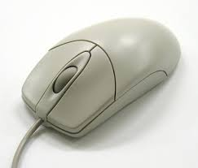 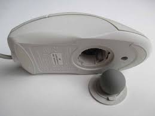Los actuales han sustituido la bola por un sistema óptico de diodo o láser de infrarrojo.
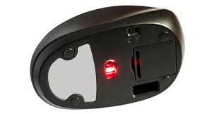 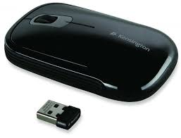En el fondo ambos tipos son el mismo (óptico) pero cada uno tiene sus propias ventajas y desventajas, pero no se puede decir que uno sea mejor que otro.
Los sensores ópticos utilizan un led de color rojo generalmente para iluminar la zona sobre la que tienen que registrar el movimiento. Los sensores láser, que también son sensores ópticos, utilizan una iluminación láser infrarroja para detectar por dónde se mueve el ratón.
El concepto del ratón ha sido ampliado con la introducción de otros dispositivos análogos como el trackball que consiste en una bola fija que se hace girar con los dedos,
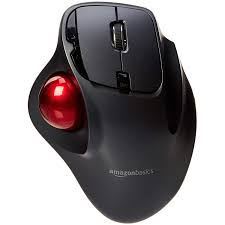 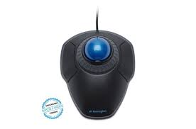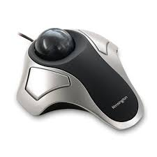 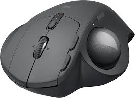
El touchpad , que utiliza un panel sensible a las presiones suaves de los dedos o
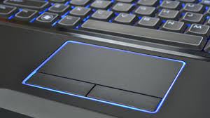 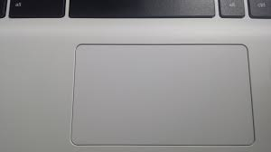 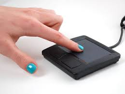
El pointing stick , un pequeño cilindro vertical. Todos ellos se utilizan en teclados de ordenadores portátiles y usan interfaces de conexión análogas a las de los teclados.
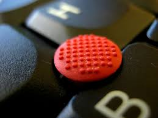 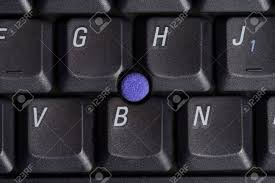 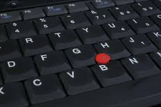
FUNCIONAMIENTO.
El mouse permite desplazar el cursor para interactuar con todos los elementos de la pantalla.
El mouse inicia y finaliza las aplicaciones de la computadora Voy a detallar las partes y funciones de un mouse:
1.- Botón izquierdo
El botón izquierdo del mouse permite la selección y la interacción con los programas y páginas web.
Al hacer clic en este botón dos veces sobre los iconos, se enviará la orden a nuestro equipo para abrir el programa correspondiente.
Con este botón se selecciona las funciones principales de cualquier aplicación.
El clic izquierdo permite indicarle al cursor que elemento se desea utilizar para trabajar en alguna actividad de la pantalla.
Cuando se hace doble clic izquierdo automáticamente se selecciona la aplicación que se ha elegido,
el doble clic realiza la apertura de cualquier archivo, documento programa de la computadora.
Al pasar el cursor sobre un ícono u otro elemento y mantener presionado este botón el usuario puede mover, o "arrastrar" el elemento a una ubicación diferente en la pantalla.
En un programa de texto, al presionarlo y arrastrar el cursor a través de las palabras o líneas se resalta la selección para poder editar el contenido.
2.- Botón derecho
El botón derecho del mouse se usa para acceder a opciones de menús especializados,
relacionados al contexto de un programa o pantalla en particular en el cual se pulsa.
Cuando utilizas este botón le solicitas a la maquina a al ordenador las opciones que pueden existir en el archivo seleccionado.
Hay funciones escondidas o que no están visibles en las aplicaciones, con el clic o botón derecho puedes verlas cuando realizas el toque del mismo.
Esto permite tener un acceso rápido a varias acciones sin tener que buscarlas en la barra de herramientas en la parte superior de la pantalla.
Por ejemplo, si hacemos clic en el botón derecho en un documento de texto, aparece un menú que permite cambiar varias propiedades del documento, como el tipo de letra y el tamaño.
Hacer clic en el botón derecho sobre una página web nos permite guardarla o imprimirla, por ejemplo.
3.- Rueda de desplazamiento
Muchos mouse de computadora están equipados con una rueda de desplazamiento situado entre los botones izquierdo y derecho, lo que te permite mover la pantalla hacia arriba y hacia abajo rápidamente.
Normalmente, el cursor se detiene conforme llega al borde superior o inferior de la pantalla, lo que requiere que muevas la barra de desplazamiento situada en la parte derecha de la pantalla para mover físicamente la pantalla hacia arriba o hacia abajo con el botón izquierdo del mouse.
La rueda de desplazamiento te permite mantener el mouse parado y mover el cursor sobre la página.
4.- Control de navegación
La parte inferior del mouse ofrece el control de navegación, el cual mueve el cursor por la pantalla y te permite seleccionar e interactuar con los objetos.
Este control de la navegación suele estar disponible en dos estilos, como una pelota de goma dura (ratón de bola o analógico)
o un láser óptico (ratón óptico o láser).
Ambos realizan la misma acción mediante el registro del movimiento del mouse conforme se desliza en un escritorio o alfombrilla y transfiriéndolo al cursor en la pantalla.
Otras funciones del mouse son las siguientes:
- Permite la selección de algún programa o documento del ordenador
- Ayuda a realizar las funciones de las aplicaciones del sistema del ordenador
- Permite efectuar funciones asignadas al teclado, es decir algunas funciones del teclado pueden ser reemplazadas por el mouse.
- El mouse simplifica las actividades de algún documento en los programas de Microsoft.
- Permite el desarrollo de todos los vínculos o comandos del cpu.
- El teclado permite la movilización en cualquier parte de la pantalla del monitor.
- Con el mouse puedes dibujar, borrar y hasta crear formatos en los programas de office.
Principales funcionamientos del mouse de acuerdo a sus figuras
La flecha
 Cuando el cursor del mouse está representado por la flecha quiere decir que está en su selección normal.
Cuando el cursor del mouse está representado por la flecha quiere decir que está en su selección normal.
Reloj de arena
Cuando en la pantalla aparece el reloj de arena quiere decir que el programa está en la realización de una función y se debe esperar, es decir esta en modo ocupado.Una línea con dos líneas verticales
Esta figura suele aparecer en programas como Word y representa la selección de algún fragmento de texto.Puntero y Reloj de Arena juntos
Esto indica que el programa está realizando funciones en segundo plano, pero se pueden realizar otras actividades.Mano
Este puntero indica la selección de un vínculo más que todo cuando se navega en la web, la mano te indica que puedes ir a un enlace realizando un clic con el botón izquierdo.Flechas delgadas con bordes
Cuando el cursor se transforma en flechas con bordes en las puntas, dependiendo de donde estén los bordes quiere decir que se ajustara la pantalla hacia donde los bordes indiquen.INSTALACIÓN: CÓMO SE INSTALA EN EL EQUIPO. DRIVERS Y SOFTWARE NECESARIO.
Analógico o con cable:
Es muy sencillo , basta con enchufar el cable a través de la conexión usb y antiguamente con PS/2,
antiguamente había que instalar un controlador en el equipo para que el ordenador identificara el ratón,
hoy en día esto se hace automáticamente, sin necesidad de instalar controladores.
Inalámbricos
Podrás conectar el ratón inalámbrico por bluetooth o podrás conectar mediante radiofrecuencia a un receptor que conectes al ordenador.
Cómo Conectar / Instalar un Ratón Inalámbrico con Windows 10
- Abra la aplicación de Configuración (presione Win + I como acceso directo) y seleccione Dispositivos.
- En el menú de la barra lateral izquierda, seleccione Bluetooth y otros dispositivos.
- Luego haga clic en el signo más junto a Agregar Bluetooth u otro dispositivo en el panel derecho.
- En la ventana emergente, haga clic en Bluetooth.
- Siga los pasos del asistente para agregar dispositivos.
- Tendrá que poner el mouse inalámbrico en modo de emparejamiento.
- El procedimiento para configurar este modo varía según el fabricante.
- Windows detectará el mouse y agregará los controladores relevantes.
Cómo Conectar / Instalar un Ratón Inalámbrico con MacOS
- Ponga su mouse inalámbrico en modo de emparejamiento
- Haga clic en Apple> Preferencias del sistema> Bluetooth.
- Su Mac buscará cualquier dispositivo en modo de emparejamiento cuando abra el panel de Bluetooth.
- Cuando la computadora encuentre el mouse, se mostrará en la ventana.
- Haga clic en emparejar.
Cómo Conectar / Instalar un Ratón Inalámbrico en Ubuntu Linux(18.04)
- Abra el panel Bluetooth y asegúrese de que el interruptor en la parte superior esté en la posición de encendido.
- Coloque su ratón inalámbrico en modo de emparejamiento.
- Haga clic con el mouse en la lista de Dispositivos y finalice la configuración.
- Debe completar este paso dentro de los 20 segundos para evitar los tiempos de espera.
- Cuando el ratón se conecta, su estado se mostrará como Conectado.
- Haga clic en el mouse conectado para abrir un panel para la personalización específica del dispositivo.
- Consulte nuestra guía de solución de problemas de emparejamiento de Bluetooth si necesita asistencia adicional.